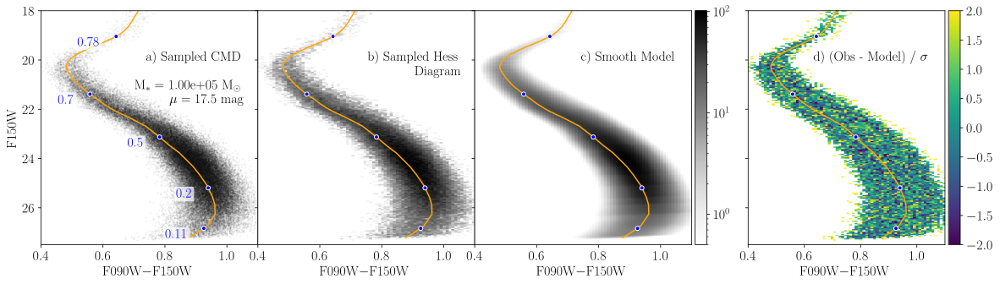

Binary Systems
Here we review the API for including binary systems in our population models. Our Monte Carlo sampling methods supports all three models, while our smooth template modelling procedure only supports NoBinaries and RandomBinaryPairs. A comparison between a Monte Carlo population and a smooth template model for a RandomBinaryPairs model with binary fraction of 70% is shown below. The redward shift of the lower main sequence typical of populations with high binary fractions is clearly evident and robustly modelled.

Types
StarFormationHistories.AbstractBinaryModel — TypeStarFormationHistories.AbstractBinaryModel is the abstract supertype for all types that are used to model multi-star systems in the package. All concrete subtypes should implement the following methods to support all features:
StarFormationHistories.sample_systemStarFormationHistories.binary_system_fractionStarFormationHistories.binary_mass_fractionBase.length, which should return an integer indicating the number of stars per system that can be sampled by the model; this is equivalent to the length of the mass vector returned bysample_system.
Note that all quantities relating to binary populations (e.g., binary_system_fraction) should be defined for the population at birth. As the stars in a binary system evolve, the more massive star may die before the system is observed at present-day. Of course, the stars in single-star systems can also die. If the rate at which binary systems become single-star systems is not equal to the rate at which single-star systems die, then there can be net transfer between these populations over time. Therefore the observed, present-day binary system fraction of an evolved population is not necessarily equal to the fraction at birth, which is the more fundamental quantity.
StarFormationHistories.NoBinaries — TypeNoBinaries()The NoBinaries type indicates that no binaries of any kind should be created.
StarFormationHistories.RandomBinaryPairs — TypeRandomBinaryPairs(fraction::Real)The RandomBinaryPairs type takes one argument 0 <= fraction::Real <= 1 that denotes the number fraction of stellar systems that are binaries (e.g., 0.3 for 30% binary fraction) and will sample binaries as random pairs of two stars drawn from the same single-star IMF. This model will ONLY generate up to one additional star – it will not generate any 3+ star systems. This model typically incurs a 10–20% speed penalty relative to NoBinaries.
StarFormationHistories.BinaryMassRatio — TypeBinaryMassRatio(fraction::Real,
qdist::Distributions.ContinuousUnivariateDistribution =
Distributions.Uniform(0.1, 1.0))The BinaryMassRatio type takes two arguments; the number fraction of stellar systems that are binaries 0 <= fraction::Real <= 1 and a continuous univariate distribution qdist from which to sample binary mass ratios, defined as the ratio of the secondary mass to the primary mass: $q = \text{M}_S / \text{M}_P$. The provided qdist must have the proper support of (minimum(qdist) >= 0) & (maximum(qdist) <= 1). Users may find the Distributions.truncated method useful for enforcing this support on more general distributions. The default qdist is a uniform distribution from 0.1 to 1, which appears to give reasonably good agreement to observations (see, e.g., Goodwin 2013).
Methods
StarFormationHistories.binary_system_fraction — Functionbinary_system_fraction(model::T) where T <: AbstractBinaryModelReturns the number fraction of stellar systems that are binaries for the given concrete subtype T <: AbstractBinaryModel. Has a default implementation of binary_system_fraction(model::AbstractBinaryModel) = model.fraction.
StarFormationHistories.binary_number_fraction — Functionbinary_number_fraction(model::T) where T <: AbstractBinaryModelReturns the number fraction of stars that in binary pairs for the given concrete subtype T <: AbstractBinaryModel. Has a default implementation of 2b / (1+b), where b is the result of StarFormationHistories.binary_system_fraction.
StarFormationHistories.binary_mass_fraction — Functionbinary_mass_fraction(model::T, imf) where T <: AbstractBinaryModelReturns the fraction of stellar mass in binary systems for the given concrete subtype T <: AbstractBinaryModel and initial mass function imf. imf must be a properly normalized probability distribution such that the number fraction of stars/systems between mass m1 and m2 is given by the integral of dispatch_imf(imf, x) from m1 to m2.
binary_mass_fraction(m::RandomBinaryPairs, imf)The RandomBinaryPairs model uses a single-star imf. If a system is chosen to be a binary pair, two stars are drawn from the single-star imf and the more massive star is made the primary. Given this model, it can be shown that the expectation value for the mass of a binary system is twice the expectation value for single star systems:
\[2\int_{\text{M}_\text{min}}^{\text{M}_\text{max}} \text{M} \frac{d\text{N} \left( \text{M} \right)}{d\text{M}} d\text{M} = \int_{\text{M}_\text{min}}^{\text{M}_\text{max}} \int_{\text{M}_\text{min}}^{\text{M}_\text{max}} \left( \text{M}_P + \text{M}_S \right) \frac{d\text{N} \left( \text{M}_S \right)}{d\text{M}} \frac{d\text{N} \left( \text{M}_P \right)}{d\text{M}} d\text{M}_S \, d\text{M}_P\]
for primary mass $\text{M}_P$, secondary mass $\text{M}_S$, and single-star IMF $d\text{N} / d\text{M}$. As such, the fraction of total stellar mass in binaries is equal to the number fraction of all stars in binary pairs, which is given by StarFormationHistories.binary_number_fraction.
binary_mass_fraction(m::BinaryMassRatio, imf)This binary model requires an imf that is defined by stellar system mass. If a system with a randomly sampled mass $M$ is is a binary, the primary and secondary mass are determined based on a binary mass ratio $q$ sampled from a user-defined distribution. By definition, the expectation value for the total mass of a binary system is equal to the expectation value for single-star systems. In this case the binary mass fraction is equal the binary system number fraction as given by StarFormationHistories.binary_system_fraction.
StarFormationHistories.sample_system — Functionmasses = sample_system(imf, rng::AbstractRNG, binarymodel::StarFormationHistories.AbstractBinaryModel)Simulates the effects of non-interacting, unresolved stellar companions on stellar photometry. Implementation depends on the choice of binarymodel.
Arguments
imf: an object implementingrand(imf)to draw a random mass for a single star or a stellar system (depends on choice ofbinarymodel)rng::AbstractRNG: the random number generator to use when sampling starsbinarymodel::StarFormationHistories.AbstractBinaryModel: an instance of a binary model that determines which implementation will be used; currently provided options areNoBinaries,RandomBinaryPairs, andBinaryMassRatio.
Returns
masses::SVector{N,eltype(imf)}: the masses of the individual stars sampled in the system in descending order whereNis the maximum number of stars that can be sampled by the providedbinarymodelas given byBase.length(binarymodel).
Notes
The trickiest part of including binaries in the smooth template modelling procedure is deriving the IMF weights. Let $M_p$ be the sorted list of initial masses for primary stars and $M_s$ be the sorted list of initial masses for secondary stars. Conceptually, the IMF weight for a binary system with primary mass $M_{p,i}$ and secondary mass $M_{s,j}$ should compute the number fraction of binary systems born with primary masses between $M_{p,i}$ and $M_{p,i+1}$ and secondary masses between $M_{s,j}$ and $M_{s,j+1}$ per unit solar mass formed.
In the case of the RandomBinaryPairs model, the IMF weights are calculated as follows, with $dN(M)/dM$ being the IMF for single stars, $\langle M \rangle$ being the mean mass of single stars over the full range of possible initial masses, and the integral in the denominator being over the range of initial masses in the isochrone. The integral in the denominator accounts for losses due to stellar evolution.
\[ w_{\text{IMF},i,j} = \frac{\int_{M_{p,i}}^{M_{p,i+1}} \int_{M_{s,j}}^{M_{s,j+1}} \frac{dN(M_p)}{dM} \frac{dN(M_s)}{dM} \ dM_p \ dM_s}{\langle M \rangle \ \int_{M_{\text{min}}}^{M_{\text{max}}} \frac{dN(M)}{dM} \ dM}\]